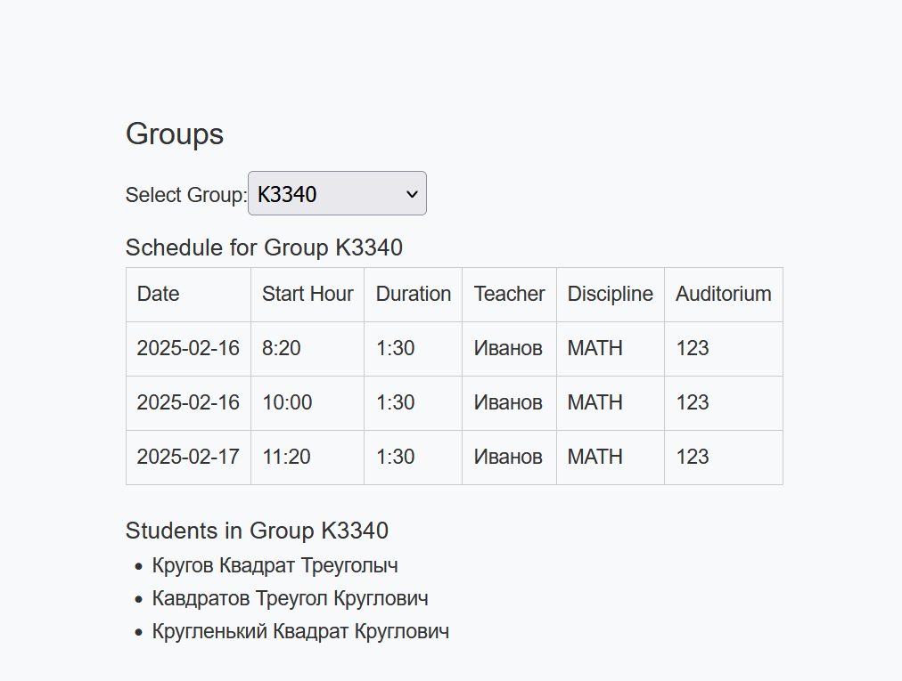
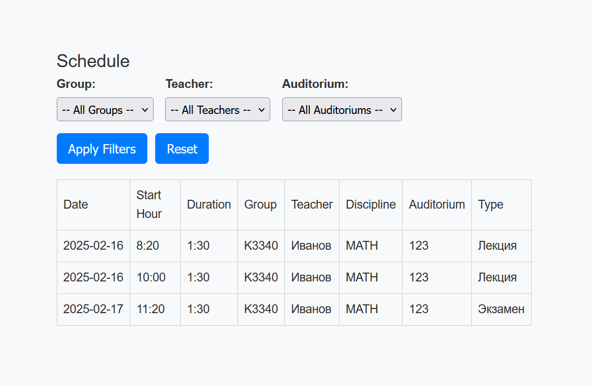
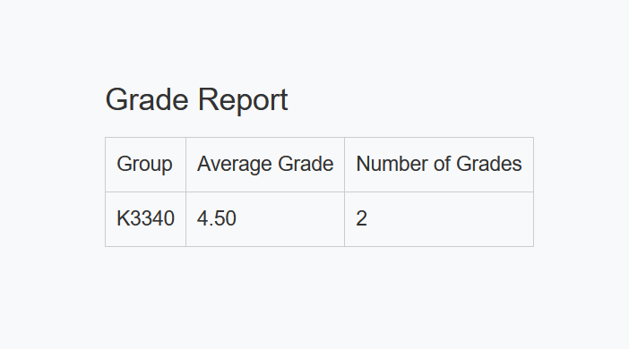

Выбранный вариант:
Создать программную систему, предназначенную для учебной части колледжа. Она должна обеспечивать хранение сведений о каждом преподавателе, о дисциплинах, которые он преподает, номере закрепленного за ним кабинета, о расписании занятий. Существуют преподаватели, которые не имеют собственного кабинета.
О студентах должны храниться следующие сведения: фамилия и имя, в какой группе учится, какую оценку имеет в текущем семестре по каждой дисциплине.
Замдекана должен иметь возможность добавить сведения о новом преподавателе или студенте, внести в базу данных семестровые оценки студентов каждой группы по каждой дисциплине, удалить данные об уволившемся преподавателе и отчисленном из колледжа студенте, внести изменения в данные об преподавателях и студентах, в том числе поменять оценку студента по той или иной дисциплине.
В задачу диспетчера учебной части входит составление расписания.
В начале по документации https://vuejs.org/guide/quick-start.html разобрался как создать проект.
На стандартную home страницу добавил кнопки для логина и логаута. Чтобы логин корректно работал, при успешном логине токен записывается в localStorage. После этого в api.js я добавляю токен в заголовок запроса. В router/index.js добавил проверку на наличие токена в localStorage, если его нет, то пользователь перенаправляется на страницу логина.
Во время проверки понял, что не был настроен CORS, добавил в settings.py третьей лабы:
CORS_ORIGIN_ALLOW_ALL = False
CORS_ORIGIN_WHITELIST = (
'http://localhost:5173',
)
После этого всё заработало. Потом добавил страницу для преподователей, дал возможность их создавать и давать им права на преподавание. Сделал отображение для дисциплин и программ обучения, с возможностью их редактирования.
Потом делал страницу групп, на которой было отображение студентов и расписание этой группы.

Это было сложно, так как нужно было отправлять много запросов для составления одной такой таблички, так как для занятий отдавались ID учителей и аудиторий и их ещё нужно было преобразовать в нормальные данные.
Дальше я добавил такое же раписание на страницу к преподавателям, так как это требовалось по заданию.
После сделал отдельную страницу с расписанием на вообще всех.

Потом занялся сводной ведомостью. Тут было не до конца понятно что делать, так как требовалось вычислять среднюю оценку на группу, а при этом оценка могла быть даже не числом (зачтено/не зачтено). Решил для упрощения игнорировать нечисловые оценки.
